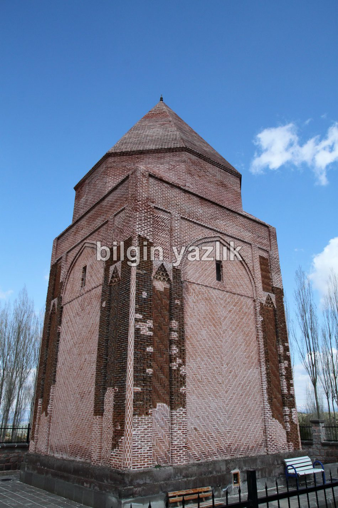
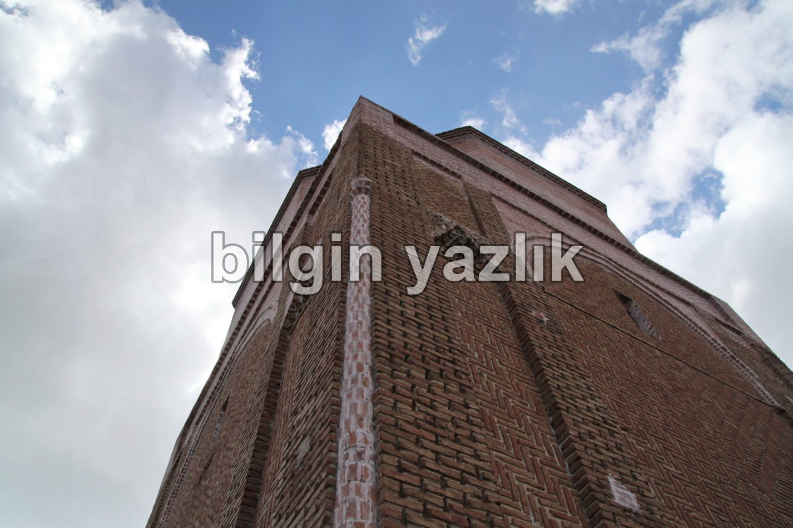
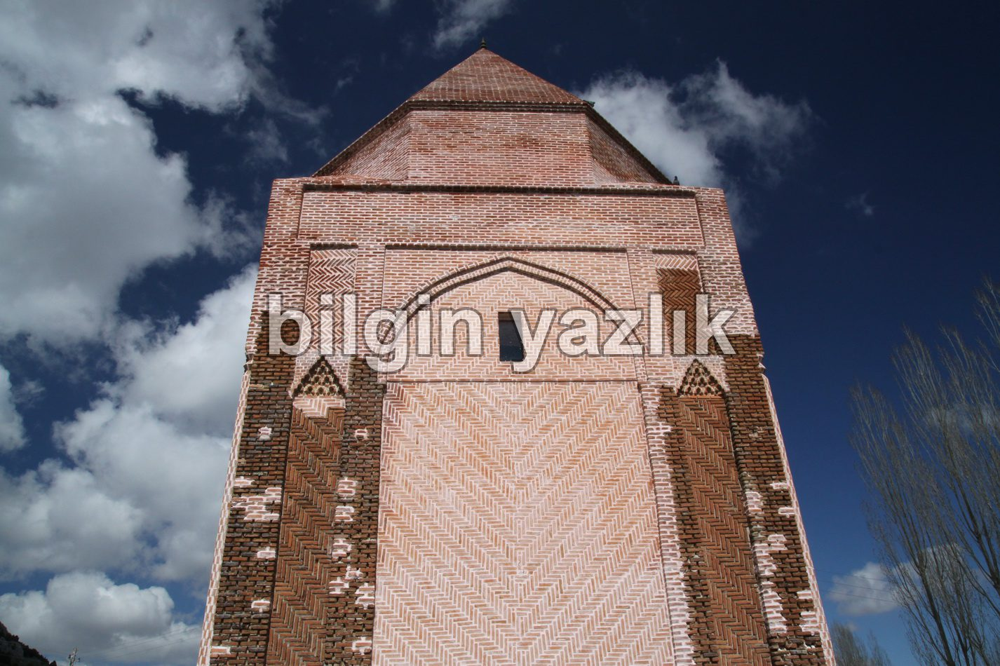

Kayseri & Koramaz · 5 Haziran 2015
Melikgazi Türbesi
Kayseri – Pınarbaşı karayolundan erişebileceğiniz bu türbe, yapıldığı malzeme açısından son derece ender bulunabilecek bir türbe, gerek mimari açıdan, gerekse konum açısından birçok türbe arasından sıyrılıyor. Türbe Melikgazi köyü sınırları içerisinde yer alıyor. Klasik Selçuklu kümbeti mimarisinde yapılmış olan kümbet iki bölümden oluşuyor, alt katta mumyalık üst katta ise sandukalar bulunuyor.
Tam Konum:



Bu yazı taliyol arşivinden taşınmıştır. · özgün kayıt